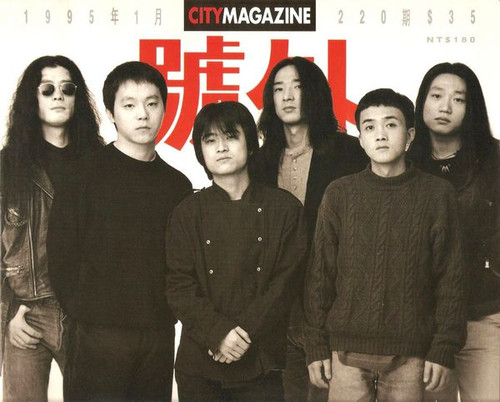
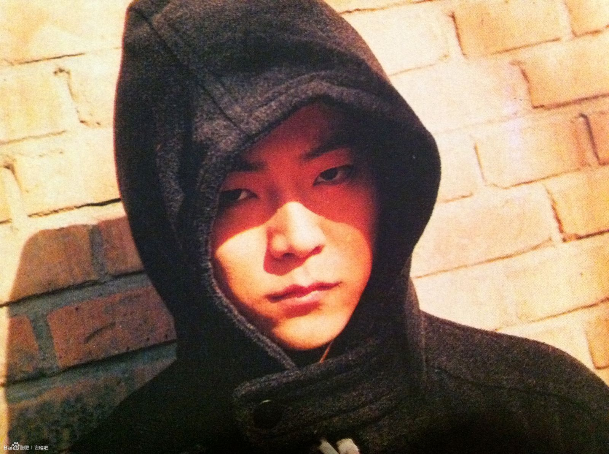
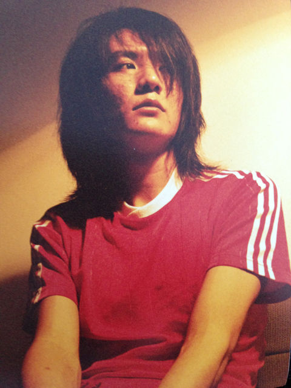
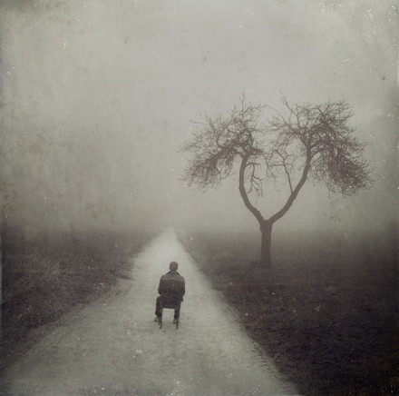
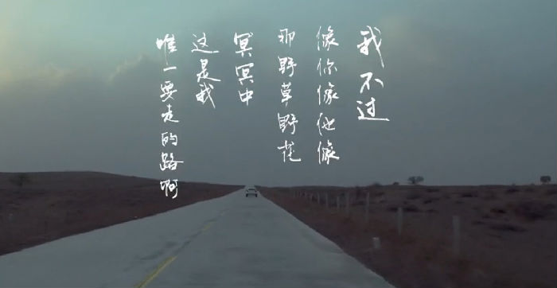
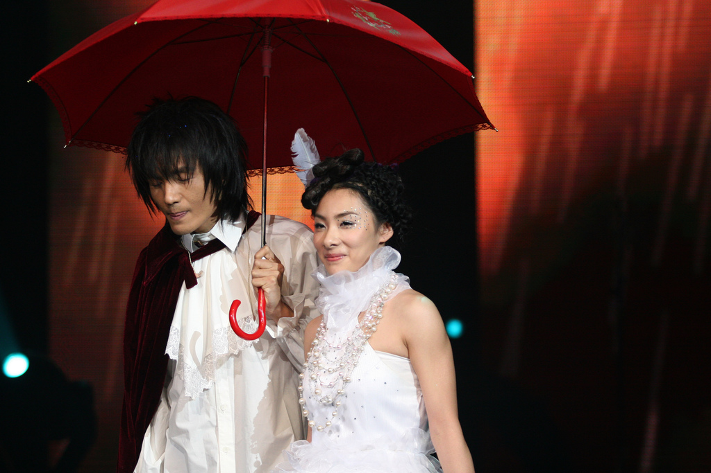
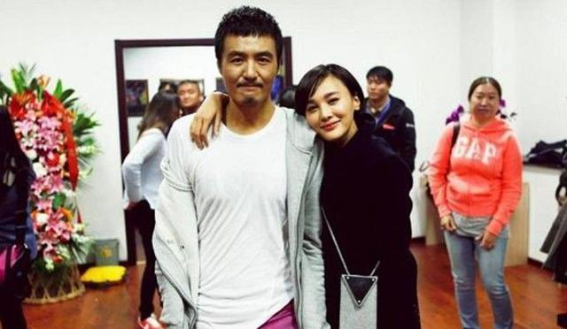
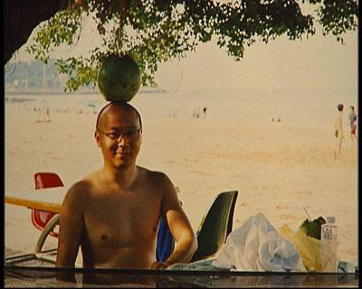
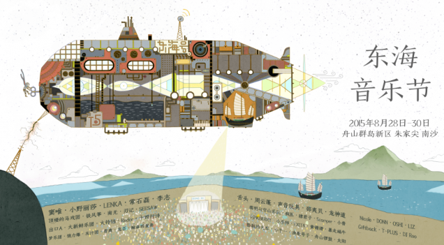

给所有不喜欢大声说话的人 — 窦唯朴树的平凡之路
这是我为团队的公众号写的文章，公众号以后也会以此类内容为主。如果大家喜欢的话，可以扫描文章末尾的二维码关注。
朴树终于回来了。
继大热的《平凡之路》后，朴树近日又为电影《刺客聂隐娘》演唱了主题曲《在木星》。缅怀完自己的「平凡」十年后，他终于坚定地告诉我们「君已归来」。

朴树的复出也让人联想起同样沉寂多年的窦唯。我们不禁想问一问，这两位「消失」多年的音乐人，为何总是让人念念不忘？

他们的影响力有多大？
窦唯可说是中国摇滚的老前辈，早在黑豹时期，他们的首张专辑销量便高达惊人的150万，由他创作的《无地自容》也是黑豹迄今为止传唱度最高的歌曲。单飞后窦唯于94年发行了《黑梦》，不仅销量达63万（同年张学友《饿狼传说》约120万），在音乐形式上也给中国摇滚乐迷带来了空前的震撼。直到二十多年后的今天，窦唯还保持着旺盛的创造力。在这个各种「教父」来了又走的浮躁年代，只有他和崔健虽与世无争，但地位无人可撼。

▲「魔岩三杰」时期可说是中国摇滚影响力的巅峰
朴树于99年推出首张专辑《我去2000年》，当年销量便超 30 万。2003再版的销量更达百万（同年《叶惠美》约150万）。如果说窦唯是「业界传奇」，朴树则是一个时代的青春回忆。他的音乐展现出了难得的单纯和诚恳——「即使全世界都变得丧心病狂，全世界都去抢银行，我也不会像他们一样，一如既往。」——当朴树在演唱会上说出这句话时，我们是相信的，是感动的。然后待到《平凡之路》一出来，整个80后都湿了。

▲朴树担任李志的2015跨年演唱会嘉宾
他们塑造了怎样的形象？
年轻时的窦唯一看就是个摇滚明星，不仅仅是外形，他的个人气质也是无可比拟的。但从《黑梦》开始，他的形象和音乐便愈加内敛、自省，甚至不食人间烟火（「新京报事件」大概是他最后一次向公众表达自己的情绪）。但无可否认，他的音乐表达形式也越来越多元化，艺术成就也相对更高。


▲窦唯在「94中国摇滚新势力 香港红磡演唱会」
朴树与他的音乐则是一出场便以忧郁与伤感迷倒了几乎所有文艺青年（那时这还不是个贬义词）。朴树的作品其实不算多，但他的创造力和想象力十分强大——首专《我去2000年》既有传唱至今的《那些花儿》，积极乐观的《在希望的田野上》，叛逆的《别，千万别》，也有《旅途》这种千帆过尽的人生感悟。个人才华毋庸置疑。

▲话说有点像长发版的马国明
他们的音乐受谁影响？
流行摇滚、哥特、氛围音乐、实验音乐、金属硬核等等等等，窦唯所能驾驭的音乐风格类型相信国内已经无人能出其右了。可能连窦唯自己也说不清自己吸收/创造了多少种曲风，只能说在早期，窦唯非常喜欢哥特摇滚的教父级乐队Bauhaus，对这种内敛、冰冷、阴暗的音乐很有共鸣，而这也直接影响了《黑梦》的风格。

▲窦唯个人专辑《黑梦》的封面

▲《黑梦》概念照
相比起音乐性，朴树的才华更主要地体现在了他歌词所表达的态度以及整体的气质上，更侧重文学性。音乐上，朴树刚出道就被张亚东承包了几乎所有音乐制作，两人相互的影响比如电子音色的使用也是随处可见。

▲电影《后会无期》片尾曲《平凡之路》的歌词
他们为什么要远离公众？
外界对窦唯和朴树性格的看法几乎是一致的：不善表达。也正因为这样，他们与这个八卦的世界格格不入，最后只能选择逃离。
当时媒体只要提到窦唯，总会冠以「王菲前夫」的字眼，只会说他「穷困潦倒」，完全不会提及他的音乐。2006年5月，《新京报》的两篇负面报道成了压倒窦唯理智的「最后一根稻草」——窦唯上门理论未果后，一怒之下烧了该报记者的车。虽然最后窦唯获无罪释放，但也从此离开了公众的视线，不再发声。

▲面对媒体，窦唯总会变得很烦躁
朴树则说，《我去2000年》里头的歌其实大多属于「强赋新词」，因为这些创作灵感大多源于他自己的想象，并没有真正发生在他身上。事实上朴树父母均是北大教授，所以他从小就生活在一个充满呵护的「围墙」之内，人情世故生活自理能力几乎为零。而专辑的成功一下把他推向了一个真实而残酷的世界，音乐则从爱好变成了职业。后来，朴树的抑郁症加重，只能离开静养。

▲朴树一直对舞台表演无所适从
这些年他们过得还好吗？
人人都说窦唯成仙，但窦唯一直在正常地生活。除了骑骑自行车，到后海发发呆，约朋友踢踢球等个人消遣之外，他的音乐也一直都在——助阵莫西子诗的专辑并合作《天宫图》、集结了一家三代父亲窦绍儒女儿窦靖童创作《潸何吊》，替电影配乐…窦唯活得一点也不「颓」。
▲窦唯和朋友在玩沙滩足球
▲窦唯为周迅的电影《李米的猜想》制作音乐
朴树则是货真价实的隐居，几乎每天待在京郊的家里看书养狗，九点多就睡觉，十年如一日。但朴树的朋友们总惦记着他——伯乐兼好友张亚东每隔一段时间就会去探望并「诱惑」他要不要考虑发新砖。但也急不来，他的状态确实有待改善。

▲平淡的日子里，妻子吴晓敏是朴树最大的后援
这个世界还会好吗？
窦唯最近一次出现在公众面前，就是早前地铁被拍到的「落魄」形象了，旁人笑我太疯癫？窦唯说，「清浊自甚，神灵明鉴」。偶尔他的豆瓣小站上也会冒出一句「4月发新专~」，可爱得不得了。

▲头顶长出瓜
朴树也终于熬过来了。现在的他，会在《树与花》演唱会时与歌迷互动，也会在担任李志演唱会的神秘嘉宾时大方聊起过去。《平凡之路》和《在木星》的广受好评想必也会让他愈发受到鼓舞吧。

▲张开怀抱的朴树，傻子才悲伤
十年间，时代或许已经改变，音乐实体也在逐渐消失。巨轮之下，所幸我们还有窦唯和朴树。接下来，窦唯已经确定会在8月底的东海音乐节演出，朴树的「好好地」个人演唱会也已经提上日程。

衷心祝愿二位吃好喝好，好好地。